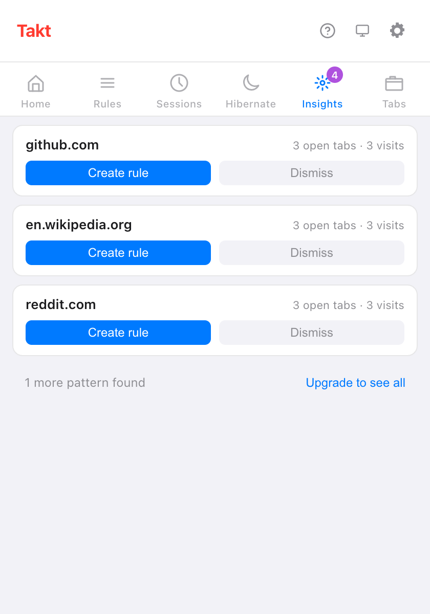

Short answer: open the Takt popup's Insights pane. Each card is a site you use a lot with no rule yet. Click Create rule, check it with Preview matching tabs, and save.
- Suggestions come from your open tabs and your recent visits, counted on your device.
- Suggest rules asks Chrome's on-device AI to group your open sites into rules.
- The Rule Tester and match counts show whether a rule does what you meant.
Where do rule suggestions come from?
Takt watches for sites that clearly deserve a group. There are three sources:
| Source | Suggests a site when | Where you see it | Plan |
|---|---|---|---|
| Open tabs | 3 or more tabs from it are open or hibernated | Popup → Insights, Options → Rules | Free: 3 cards at a time |
| Recent visits | You opened it 5+ times, or on visits spread over 2+ days, in the last 7 days | Popup → Insights, Options → Rules | Free: 3 cards at a time |
| AI Suggestions | You click Suggest rules | Options → Rules | Free, up to the 5-rule limit |
A site that an existing domain or contains rule already covers is never suggested. Neither is anything you dismissed.
How does the Insights pane work?
Each card shows a site and why it's there, for example "3 open tabs · 3 visits". Two buttons:
- Create rule opens the rule editor with the site already filled in. Nothing is saved until you click Create Rule.
- Dismiss hides the card. Dismissed suggestions stay listed on the options Rules page, where you can restore them.
Free users see the top 3 cards and a line such as "1 more pattern found". Premium ($3/month or $30/year) shows them all.

What does Takt record to make suggestions?
Only site names and counts. In Rules mode, when a new tab matches none of your rules, Takt adds one to that site's visit count. It keeps:
- the domain, a visit count, and the first and last time it saw it;
- entries from the last 7 days only, and at most 1,000 sites;
- nothing from incognito windows.
It's stored in Chrome's local extension storage and never leaves your browser. Clear tab pattern history in Settings wipes it. If you grant the optional browsing history permission, the visit numbers on each card come from Chrome's own history for the last 90 days instead.
What are AI rule suggestions?
On the options Rules page, Suggest rules sends the list of sites in your open tabs to Chrome's built-in Prompt API. The model runs on your device, groups the sites by theme and names each group. Only site names go in: no titles, no page content.
- Each suggestion has Add rule and Dismiss. Add rule saves it straight away, enabled.
- The first run can take a minute while Chrome prepares the model.
- On a device that can't run the model, you see "AI suggestions aren't available on this device."
- On the free plan, you get as many suggestions as you have free rule slots left, out of 5.
How do I test a rule before trusting it?
Two tools on the options Rules page:
- Rule Tester. Paste a URL, and optionally a page title. Takt answers "Matches: rule → group" or "No matching rule". Tick Include disabled rules to test rules you've switched off.
- Preview matching tabs. Inside the rule editor, this lists the open tabs your unsaved conditions would catch, across all windows. If none match, it says "No tabs match this rule."

How do I know a rule is working?
Each rule in the list shows how many tabs it has filed into its group. A tab counts when the rule moves it out of "ungrouped".
The Stats view adds the totals: tabs organized, tabs per day, your top rule, and your 10 most-used rules. A rule that stays at zero for a week is worth a second look with the Rule Tester. Reset statistics starts the counts over.
Can I create a rule from the page I'm on? Premium
Yes. Right-click the page and choose Create rule from this tab. Takt opens the rule editor with a glob pattern such as *://github.com/* filled in. Review it and save.
What suggestions can't do
- They work site by site. Takt won't suggest "all pull requests" across repos. Write a glob or regex rule for that (Premium).
- Open-tab suggestions need 3 tabs from one site. Two tabs won't trigger a card.
- AI suggestions depend on Chrome's on-device model. Older or low-powered machines may not get them.
- Suggestions feed Rules mode. If you'd rather not write rules at all, try Category or AI grouping.
Open a few tabs as usual. Let Takt tell you which rule to write.
Add Takt to Chrome, freeFAQ
How does Takt decide which rules to suggest?
A site qualifies with 3 or more open tabs, or with 5 visits (or visits over 2 days) in the past 7 days, as long as no rule covers it.
Are rule suggestions free?
Yes. Free users see 3 Insights cards at a time and AI suggestions up to the 5-rule limit. Premium ($3/month or $30/year) shows all of them.
Do AI rule suggestions send my tabs anywhere?
No. Only the site names of your open tabs go to Chrome's on-device model. See how Takt keeps data local.
Can I get a dismissed suggestion back?
Yes. The options Rules page lists dismissed suggestions, and you can restore them there.